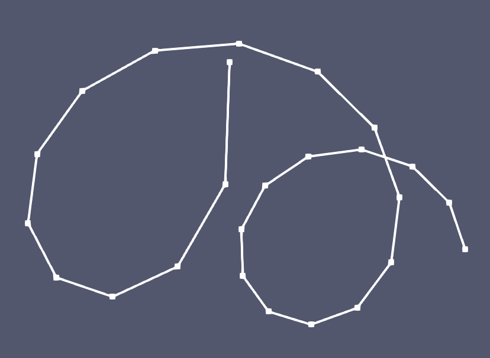
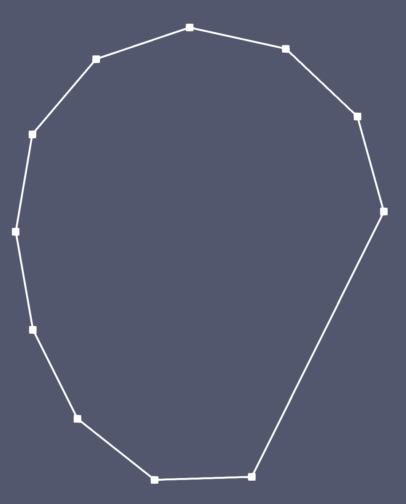

- nums_segmentsNumbers of segments (EDGE2 elements) of each section of the curve to be generated. The number of entries in this parameter should be equal to one less than the number of entries in 'section_bounding_t_values'
C++ Type:std::vector<unsigned int>
Controllable:No
Description:Numbers of segments (EDGE2 elements) of each section of the curve to be generated. The number of entries in this parameter should be equal to one less than the number of entries in 'section_bounding_t_values'
- section_bounding_t_valuesThe 't' values that bound the sections of the curve. Start and end points must be included. The number of entries in 'nums_segments' should be equal to one less than the number of entries in this parameter.
C++ Type:std::vector<double>
Controllable:No
Description:The 't' values that bound the sections of the curve. Start and end points must be included. The number of entries in 'nums_segments' should be equal to one less than the number of entries in this parameter.
- x_formulaFunction expression of x(t)
C++ Type:std::string
Controllable:No
Description:Function expression of x(t)
- y_formulaFunction expression of y(t)
C++ Type:std::string
Controllable:No
Description:Function expression of y(t)
ParsedCurveGenerator
This ParsedCurveGenerator object is designed to generate a mesh of a curve that consists of EDGE2 elements.
Overview
The ParsedCurveGenerator object generates a 3D curve mesh composed of EDGE2 elements which connect the series of points given by , where the range of t is specified by the user. The curve to be generated is described by the following equations,
where, , , and are all provided in the form of C++ function parser through "x_formula", "y_formula", and "z_formula", respectively. The constants used in these formulae can be defined by "constant_names" and "constant_expressions".

Figure 1: A 3D open curve generated by ParsedCurveGenerator defined as ; ; with ranging from to .
Key values including the starting and ending values of must be specified by "section_bounding_t_values". Optionally, intermediate values can be added so that the curve can be divided into several sections. Note that the elements in "section_bounding_t_values" must be unique and change monotonically. Each interval defined by "section_bounding_t_values" must have a corresponding number of segments (i.e., EDGE2 elements), , defined by "nums_segments".
Calculating Segment Division Points
Each section of the curve should ideally have segments of similar length. However, it is challenging to predict the corresponding values that yield segments with similar length. Hence, oversampling is used to determine the values which result in consistent segment length. The oversampling factor can be defined through "oversample_factor". Assuming that a section of curve is defined by and , the distance between the starting and ending points of this section has the following form,
(2)Thus, the oversampling target is to achieve that the maximum interval between neighboring sampling points is lower than a threshold value defined as follows,
(3)The oversampling is realized by a binary algorithm, which divides oversized intervals in halves until all the intervals are shorter than . Then the oversampled section points are used to determine the actual point locations (i.e., values).
Example Syntax
ParsedCurveGenerator is capable of generating both open and closed curves.
For open curve generation, the approach is straightforward with the example shown as follows.
Listing 1: the input syntax sample to generate an open logarithmic curve
[Mesh]
[pcg]
type = ParsedCurveGenerator
x_formula = 't'
y_formula = 'log10(1+9*t)'
section_bounding_t_values = '0 1'
nums_segments = 8
[]
[]

Figure 2: An open logarithmic curve generated by ParsedCurveGenerator.
On the other hand, for closed curve generation (defined by "is_closed_loop"), ideally the starting and ending values of should lead to the same , , and values, as shown below.
Listing 2: the input syntax sample to generate a closed half circular and half elliptical curve
[Mesh]
[pcg]
type = ParsedCurveGenerator
x_formula = '1.0*cos(t)'
y_formula = 'y1:=1.0*sin(t);
y2:=1.5*sin(t);
if(t<pi,y1,y2)'
section_bounding_t_values = '0.0 ${fparse pi} ${fparse 2.0*pi}'
nums_segments = '10 10'
constant_names = 'pi'
constant_expressions = '${fparse pi}'
is_closed_loop = true
[]
[]

Figure 3: A closed half circular and half elliptical curve generated by ParsedCurveGenerator.
If the starting and ending values of lead to different , , or values, the curve will be "forced" to close by directly connecting the starting and ending points (see Figure 4).

Figure 4: a fraction of the curve shown in Figure 3 forced to be closed.
By default, the curve section that closes the curve consists of only one EDGE2 element. However, users can also use "forced_closing_num_segments" to specify the number of elements in that curve section.
Used with Other Mesh Generators
If "z_formula" is set as zero (which is the default value), the generated curve resides in the XY-plane, and a pair of such ParsedCurveGenerator objects can naturally be connected by FillBetweenCurvesGenerator using FillBetweenPointVectorsTools.
Additionally, closed XY-plane curve meshes generated by ParsedCurveGenerator can be used by XYDelaunayGenerator as either "boundary" or "holes". See example below.
Listing 3: the input syntax sample to use ParsedCurveGenerator with XYDelaunayGenerator
[Mesh]
[pcg]
type = ParsedCurveGenerator
x_formula = 'r*cos(t)'
y_formula = 'y1:=r*sin(t);
y2:=b*sin(t);
if(t<pi,y1,y2)'
section_bounding_t_values = '${fparse 0.0} ${fparse pi} ${fparse 2.0*pi}'
constant_names = 'pi r b'
constant_expressions = '${fparse pi} 1.0 1.5'
nums_segments = '10 10'
is_closed_loop = true
[]
[hole1]
type = ParsedCurveGenerator
constant_names = 'th a b xs ys'
constant_expressions = '${fparse pi/4.0} 0.25 0.5 0.1 0.3'
x_formula = 'x0:=a*cos(t);
y0:=b*sin(t);
cos(th)*x0-sin(th)*y0+xs'
y_formula = 'x0:=a*cos(t);
y0:=b*sin(t);
sin(th)*x0+cos(th)*y0+ys'
section_bounding_t_values = '0.0 ${fparse 2.0*pi}'
nums_segments = 18
is_closed_loop = true
[]
[hole2]
type = ParsedCurveGenerator
constant_names = 'th a xs ys'
constant_expressions = '${fparse pi/2.0} 0.3 -0.1 -0.8'
x_formula = 'x0:=a*(1+cos(t))*cos(t);
y0:=a*(1+cos(t))*sin(t);
cos(th)*x0-sin(th)*y0+xs'
y_formula = 'x0:=a*(1+cos(t))*cos(t);
y0:=a*(1+cos(t))*sin(t);
sin(th)*x0+cos(th)*y0+ys'
section_bounding_t_values = '0 ${fparse pi} ${fparse 2.0*pi}'
nums_segments = '9 9'
is_closed_loop = true
[]
[xydg]
type = XYDelaunayGenerator
boundary = 'pcg'
holes = 'hole1 hole2'
add_nodes_per_boundary_segment = 1
refine_boundary = false
desired_area = 0.03
[]
[]

Figure 5: An example mesh generated by using ParsedCurveGenerator with XYDelaunayGenerator
Input Parameters
- constant_expressionsVector of values for the constants in constant_names (can be an FParser expression)
C++ Type:std::vector<std::string>
Controllable:No
Description:Vector of values for the constants in constant_names (can be an FParser expression)
- constant_namesVector of constants used in the parsed function (use this for kB etc.)
C++ Type:std::vector<std::string>
Controllable:No
Description:Vector of constants used in the parsed function (use this for kB etc.)
- edge_nodesetsNodesets on both edges of the parsed curves
C++ Type:std::vector<BoundaryName>
Controllable:No
Description:Nodesets on both edges of the parsed curves
- forced_closing_num_segmentsNumber of segments (EDGE2 elements) of the curve section that is generated to forcefully close the loop.
C++ Type:unsigned int
Controllable:No
Description:Number of segments (EDGE2 elements) of the curve section that is generated to forcefully close the loop.
- is_closed_loopFalseWhether the curve is closed or not.
Default:False
C++ Type:bool
Controllable:No
Description:Whether the curve is closed or not.
- max_oversample_number_factor1000For each section of the curve, the maximum number of oversampling points is the product of this factor and the number of nodes on the curve.
Default:1000
C++ Type:unsigned int
Controllable:No
Description:For each section of the curve, the maximum number of oversampling points is the product of this factor and the number of nodes on the curve.
- oversample_factor10Oversample factor to help make node distance nearly uniform.
Default:10
C++ Type:double
Controllable:No
Description:Oversample factor to help make node distance nearly uniform.
- point_overlapping_tolerance1e-06The point-to-point distance tolerance that is used to determine whether the two points are overlapped.
Default:1e-06
C++ Type:double
Controllable:No
Description:The point-to-point distance tolerance that is used to determine whether the two points are overlapped.
- z_formula0Function expression of z(t)
Default:0
C++ Type:std::string
Controllable:No
Description:Function expression of z(t)
Optional Parameters
- control_tagsAdds user-defined labels for accessing object parameters via control logic.
C++ Type:std::vector<std::string>
Controllable:No
Description:Adds user-defined labels for accessing object parameters via control logic.
- disable_fpoptimizerFalseDisable the function parser algebraic optimizer
Default:False
C++ Type:bool
Controllable:No
Description:Disable the function parser algebraic optimizer
- enableTrueSet the enabled status of the MooseObject.
Default:True
C++ Type:bool
Controllable:No
Description:Set the enabled status of the MooseObject.
- enable_ad_cacheTrueEnable caching of function derivatives for faster startup time
Default:True
C++ Type:bool
Controllable:No
Description:Enable caching of function derivatives for faster startup time
- enable_auto_optimizeTrueEnable automatic immediate optimization of derivatives
Default:True
C++ Type:bool
Controllable:No
Description:Enable automatic immediate optimization of derivatives
- enable_jitTrueEnable just-in-time compilation of function expressions for faster evaluation
Default:True
C++ Type:bool
Controllable:No
Description:Enable just-in-time compilation of function expressions for faster evaluation
- evalerror_behaviornanWhat to do if evaluation error occurs. Options are to pass a nan, pass a nan with a warning, throw a error, or throw an exception
Default:nan
C++ Type:MooseEnum
Controllable:No
Description:What to do if evaluation error occurs. Options are to pass a nan, pass a nan with a warning, throw a error, or throw an exception
- save_with_nameKeep the mesh from this mesh generator in memory with the name specified
C++ Type:std::string
Controllable:No
Description:Keep the mesh from this mesh generator in memory with the name specified
Advanced Parameters
- nemesisFalseWhether or not to output the mesh file in the nemesisformat (only if output = true)
Default:False
C++ Type:bool
Controllable:No
Description:Whether or not to output the mesh file in the nemesisformat (only if output = true)
- outputFalseWhether or not to output the mesh file after generating the mesh
Default:False
C++ Type:bool
Controllable:No
Description:Whether or not to output the mesh file after generating the mesh
- show_infoFalseWhether or not to show mesh info after generating the mesh (bounding box, element types, sidesets, nodesets, subdomains, etc)
Default:False
C++ Type:bool
Controllable:No
Description:Whether or not to show mesh info after generating the mesh (bounding box, element types, sidesets, nodesets, subdomains, etc)